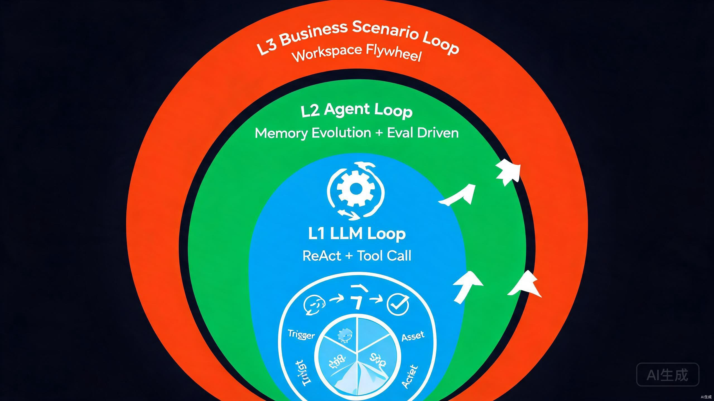
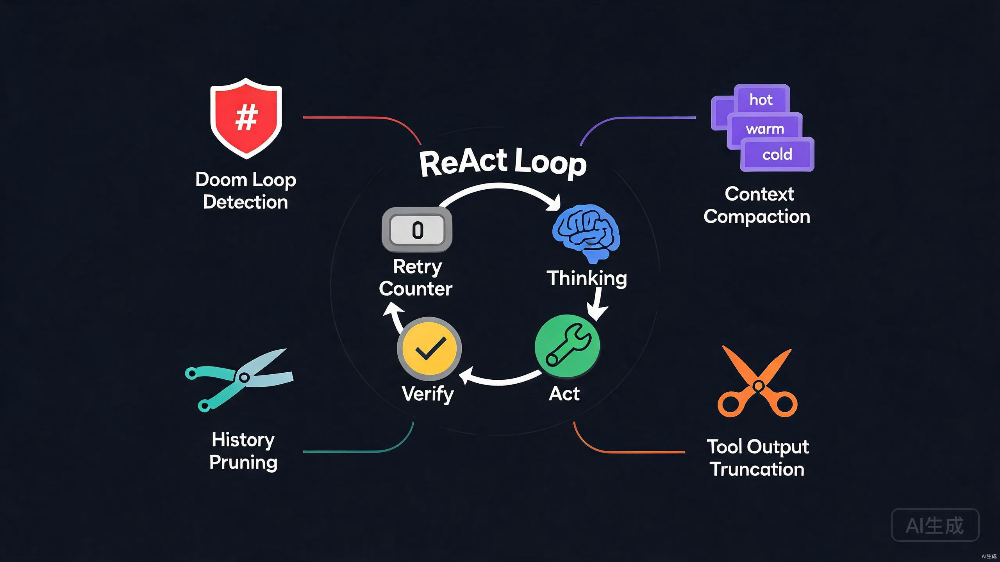
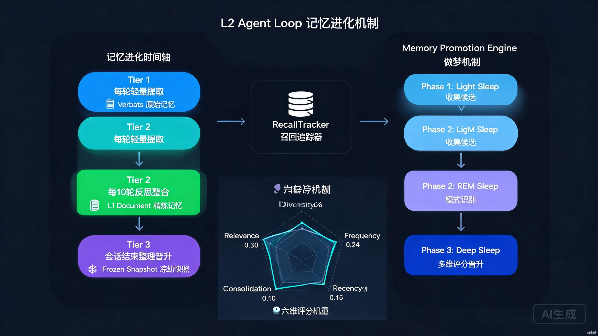
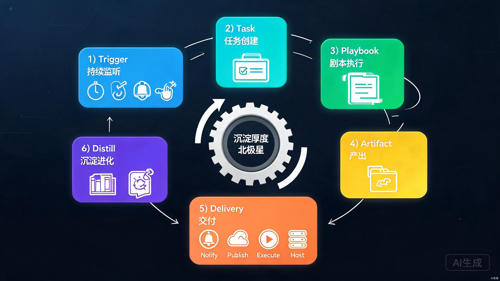
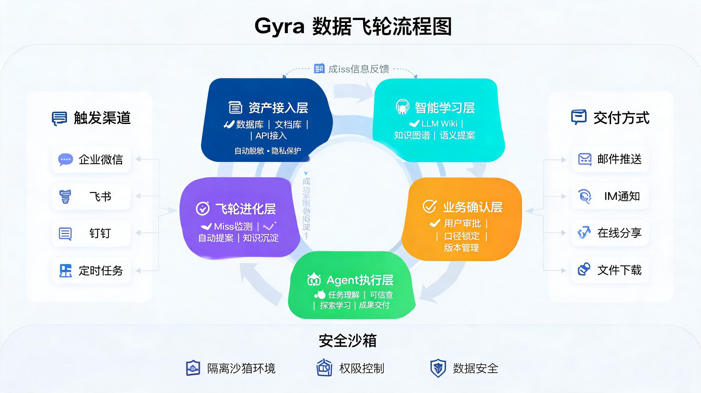

三层 Loop Engineering 与五环数据飞轮
一AI 发展的五个时代
AI 应用工程经历了几年的迭代，每一代都在解决上一代留下的"不闭环"问题。
| 时代 | 核心范式 | 解决了什么 | 留下的新问题 |
|---|---|---|---|
| Prompt · Chatbot | 单轮/多轮对话 | 让 LLM 能"说话" | 无状态、无工具、对话结束一切蒸发 |
| Workflow | 人工设定流程节点 | 让 LLM 接入工具、串成流水线 | 流程刚性，现实与流程不符即崩 |
| ReAct | 全动态规划推进任务 | LLM 自己决定下一步做什么 | 长程任务跑飞、上下文爆炸、死循环 |
| Harness / Context | 精细化运行与环境管理 | 控制上下文、约束执行、托管运行时 | 仍是"一次性任务"，经验不沉淀 |
| Loop Engineering（当前） | 三层嵌套循环 | 让 AI 从"完成任务"走向"持续参与场景" | — |
每一代的进步都伴随着"循环"的引入和加深：Workflow 是人写死的外层循环，ReAct 让循环进入 LLM 内部，Context 工程让循环变得可控，Loop Engineering 则把循环扩展到模型层、Agent 层、业务层三个维度，并把"沉淀—复用—进化"做成飞轮。
这一演进与行业共识同构：Cobus Greyling 的 Loop Engineering 给出核心命题——"Stop prompting. Design the loop."——把"你催促 Agent 干活"这件事本身变成一个可设计的系统，人类从"每次手动触发"走向"设计让 Agent 自己持续运转的循环"。Gyra 的三层 Loop 正是这一范式在团队业务场景（而非单机编码）上的落地。
二为什么是 Loop Engineering 时代
前四个时代的共同假设是：AI 处理的是一个独立的、有明确起止的任务。但真实业务场景不是一个个孤立任务，而是纷繁交织的事件和持续进行的工作。
要让 AI 原生地承担某个场景的工作，需要的不是"更强的单次任务能力"，而是面向场景进行循环：持续监听接收任务（事件驱动）、自主规划处理、完成交付积累迭代、自主成长进化。这就是 Loop Engineering 时代的核心命题。
三三层 Loop 总览

| 层次 | 名称 | 循环本质 | 解决什么 | 核心载体 |
|---|---|---|---|---|
| L1 | LLM Loop | 思考 → 行动 → 验证 | 让模型循环起来解决复杂任务 | run_loop.py + react_master_agent |
| L2 | Agent Loop | 记忆进化 + 沉淀反哺 | 让 Agent 面对复杂任务更准、更厉害 | LongTermMemoryManager + MemoryPromotionEngine |
| L3 | 业务场景 Loop | 触发 → 执行 → 产出 → 交付 → 沉淀 → 演化 | 让 Agent 在场景里变成真实角色 | Workspace + Trigger + Playbook |
三层是嵌套驱动关系：L3 的业务任务驱动 L2 的 Agent，L2 的 Agent 在每一步内执行 L1 的 LLM Loop。每一层的循环产物都会反哺上一层，形成"内层跑得稳、外层长得快"的协同。
四L1 LLM Loop：让模型循环起来

L1 Loop 的核心是Thinking → Acting → Verify 的循环，由 run_loop.py 承载多轮推进，直到 LLM 不再发出工具调用、达到上限、失败或挂起。Loop 的挂起状态（AWAITING_USER / AWAITING_TOOL_PERMISSION / AWAITING_SUB_AGENT）会中断 turn，等人介入或子智能体完成后再恢复。
让 LLM 循环起来容易，让它在很多步内不崩、不跑飞、不烧钱，才是难点。Gyra 用四道闸门守护循环：
| 闸门 | 机制 | 作用 |
|---|---|---|
| 死循环检测 | 对"工具名 + 规范化参数"做 SHA256 哈希，连续 3 次相同即拦截 | 把"无限烧钱循环"扼杀在执行前 |
| 上下文压缩 | 按预算把历史分 hot / warm / cold 三层，冷层摘要化 | 300 步循环上下文不爆 |
| 工具输出截断 | 超大输出归档到 Agent 文件系统，返回分页引用 | 保护上下文不丢失信息 |
| 历史裁剪 | 基于使用率触发修剪（高水位 0.8 / 保护比 0.15） | 给上下文留呼吸空间 |
五L2 Agent Loop：让 Agent 越用越准

L1 Loop 解决了"单次任务跑得稳"，但 Agent 每次启动仍是"白纸一张"。L2 Loop 的目标是让跑过的任务变成下次执行的加速器——这是 Agent 真正"成长"的关键。
三层进化机制：Tier 1 每轮轻量记录 → Tier 2 每 10 轮反思去重 → Tier 3 会话结束晋升归档。这是一种"在线学习"式的记忆进化，边跑边沉淀，而非事后总结。
召回追踪：持久记录每条记忆的召回次数、累计相关度、跨天召回跨度——用真实数据而非"感觉"决定重要性。
三阶段"做梦"晋升：借鉴人类睡眠，浅睡收集候选 → REM 模式识别 → 深睡六维评分晋升。晋升阈值 0.5，每轮最多 10 条，只有真正反复被需要、跨多个问题、跨多天仍然有用的记忆才会被固化。
沉淀反哺：L2 记忆还会单向沉淀为 workspace 资产，把个体经验变成组织资产——这是五环飞轮中"资产环"的输入源。
六L3 业务场景 Loop：通向 AIGC 的桥梁

L1 和 L2 仍在"任务"维度循环——任务结束，循环结束。但真实场景是持续进行的。L3 Loop 把循环扩展到业务场景层，让 Agent 在场景里变成一个真实角色，自主持续参与。
触发器（Trigger）统一四种触发源：timer（定时巡检）、webhook（CI 事件）、alert（监控告警）、manual（用户发起）。这是 L3 的"事件驱动"特性——Agent 不是等人发指令，而是持续监听场景事件。
剧本（Playbook）是策略声明，而非工作流脚本——这是一个关键的范式选择：
playbook:
skills: # 这个场景能用哪些 Skill（Agent 自己选怎么用）
- ref(resource:db_query_skill)
context: # 执行前强制加载的资产和资源
assets_required: [...]
gates: # 不变量——某些条件下必须人介入
- id: review_if_anomaly
condition: "anomalies_detected == true"
intervention: { type: review }
deliverables: # 必须产出什么、怎么分发
- type: report
delivery: [{ category: notify, channel: email }]
distill: # 必须沉淀什么
forced: true
produce: [{ type: historical_artifact }]
这个设计的精髓：Playbook 不规定"怎么做"，只规定"必须满足什么约束、能用什么资源、必须产出什么"。怎么做让 Agent 决定。这是 Agentic 时代的正确范式。
四类交付覆盖交付物的所有去向：Notify（推给人）、Publish（写入外部系统）、Execute（真实世界执行，审批门控）、Host（在空间内托管运行）。其中 Host 类是核心差异化交付——空间不只是工作发生的地方，还是交付物栖居的地方。
沉淀与演化让 L3 成为"飞轮"而非"循环"：Task 关闭前强制校验沉淀完整性，产出物沉淀为资产；Playbook 定期演化提议推给人审批。AI 不能自动改剧本——所有提议必须人审批后才生效，这是红线。
七三层协同与五环数据飞轮

三层 Loop 的最终目标是让业务数据自主飞轮进化。五环由 SharedEventBusComponent 驱动同一条 AssetEventBus，通过事件联动（TRACE_FINALIZED / SEDIMENT_RECEIVED / MATURITY_PROMOTED / EVOLUTION_PROPOSED）避免"事件孤岛、飞轮断裂"：
| 环 | 含义 | 载体 | 事件/产物 |
|---|---|---|---|
| 资产环 | 记忆沉淀为组织资产，成熟度五级晋升 | workspace_asset + SedimentPipeline | draft → proposed → confirmed → published → canonical |
| Agent 环 | Agent 在场景里成长，四阶段跃迁决定权限 | agent_maturity | novice → proficient → expert → master |
| Trace 环 | 每次执行采集轨迹，finalize 发布事件 | BufferedTraceCollector | TRACE_FINALIZED |
| 演化环 | 累积轨迹分析出优化提议，人审批后应用 | playbook/evolution | EVOLUTION_PROPOSED |
| 评测环 | 对 Agent 产出做评测，反馈成熟度评分 | evaluate 服务 | 评分回写 Agent / 资产环 |
整个三层 Loop + 五环数据飞轮的设计，都服务于一个北极星指标——沉淀厚度：
八总结：Loop 时代的三个判断
判断一：AI 产品的竞争，从"模型能力"转向"Loop Engineering"。模型能力在趋同，真正拉开差距的是如何让模型在真实场景里持续、可控、进化地工作。三层 Loop 不是"三个功能"，是"三种循环维度的工程能力"。
判断二：业务场景 Loop 是通向 AIGC 的真正桥梁。只有 L3 把循环扩展到"持续进行的场景"，AI 才能从"被调用时才存在"变成"始终在场、持续成长的真实角色"。
判断三：飞轮进化是团队原生 AI 的护城河。个人 Agent 的循环止于"任务完成"，团队原生 AI 的循环止于"场景沉淀"。这种复利动能是个人 Agent 无法复制的护城河。